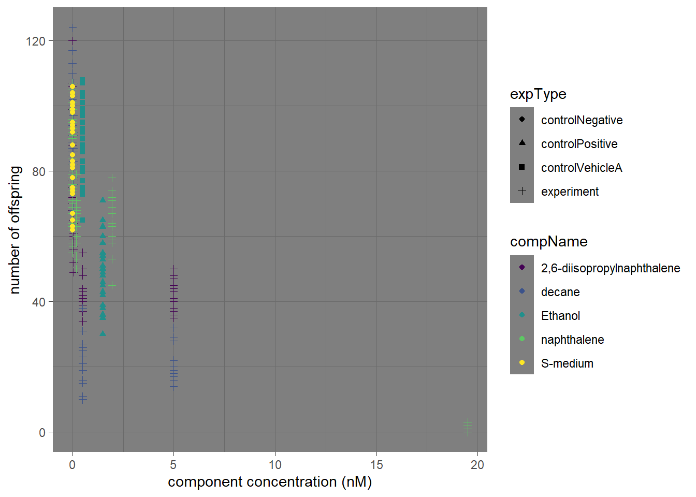

Chapter 2 IC50 C.elegans experiment workflow
C.elegans plate experiment
Data for this experiment was provided by J.Louter (INT/ILC). In the experiment adult C.elegans nematodes were incubated by different concentration of different chemicals. after the incubation the amount of offspring was counted. Ethanol was used as a positive control and S-medium as the negative control.
For a full IC50 analysis the averages of the compounds should be merged. this can be plotted out in a line graph. then at the middle between the lowest and highest point on that spot on the X-axis is the IC50. after doing this for all the chemicals they can be compared.
first we open and save the data file to our R console.
library(readxl)
library(tidyverse)
onderzoek_data_portfolie_1 <- read_xlsx("data/CE.LIQ.FLOW.062_Tidydata.xlsx")now that we imported the data we can check if the data types are rightfully interpreted. by using the head command we can see the first 10 rows and the column names and their assigned types.
head(onderzoek_data_portfolie_1)## # A tibble: 6 × 34
## plateRow plateColumn vialNr dropCode expType expReplicate expName
## <lgl> <lgl> <dbl> <chr> <chr> <dbl> <chr>
## 1 NA NA 1 a experiment 3 CE.LIQ.FLOW.062
## 2 NA NA 1 b experiment 3 CE.LIQ.FLOW.062
## 3 NA NA 1 c experiment 3 CE.LIQ.FLOW.062
## 4 NA NA 1 d experiment 3 CE.LIQ.FLOW.062
## 5 NA NA 1 e experiment 3 CE.LIQ.FLOW.062
## 6 NA NA 2 a experiment 3 CE.LIQ.FLOW.062
## # ℹ 27 more variables: expDate <dttm>, expResearcher <chr>, expTime <dbl>,
## # expUnit <chr>, expVolumeCounted <dbl>, RawData <dbl>, compCASRN <chr>,
## # compName <chr>, compConcentration <chr>, compUnit <chr>,
## # compDelivery <chr>, compVehicle <chr>, elegansStrain <chr>,
## # elegansInput <dbl>, bacterialStrain <chr>, bacterialTreatment <chr>,
## # bacterialOD600 <dbl>, bacterialConcX <dbl>, bacterialVolume <dbl>,
## # bacterialVolUnit <chr>, incubationVial <chr>, incubationVolume <dbl>, …in the data above we can see that Rawdata is dbl but this should be integer. compname is character but should be a factor and compconcentration is character but should be dbl before we can work with the data we are going to change these to the right data type.
#install.packages("ggplot2")
onderzoek_data_portfolie_1$compName <- as.factor(onderzoek_data_portfolie_1$compName)
onderzoek_data_portfolie_1$RawData <- as.numeric(onderzoek_data_portfolie_1$RawData)
onderzoek_data_portfolie_1$compConcentration <- as.numeric(onderzoek_data_portfolie_1$compConcentration)
head(onderzoek_data_portfolie_1)## # A tibble: 6 × 34
## plateRow plateColumn vialNr dropCode expType expReplicate expName
## <lgl> <lgl> <dbl> <chr> <chr> <dbl> <chr>
## 1 NA NA 1 a experiment 3 CE.LIQ.FLOW.062
## 2 NA NA 1 b experiment 3 CE.LIQ.FLOW.062
## 3 NA NA 1 c experiment 3 CE.LIQ.FLOW.062
## 4 NA NA 1 d experiment 3 CE.LIQ.FLOW.062
## 5 NA NA 1 e experiment 3 CE.LIQ.FLOW.062
## 6 NA NA 2 a experiment 3 CE.LIQ.FLOW.062
## # ℹ 27 more variables: expDate <dttm>, expResearcher <chr>, expTime <dbl>,
## # expUnit <chr>, expVolumeCounted <dbl>, RawData <dbl>, compCASRN <chr>,
## # compName <fct>, compConcentration <dbl>, compUnit <chr>,
## # compDelivery <chr>, compVehicle <chr>, elegansStrain <chr>,
## # elegansInput <dbl>, bacterialStrain <chr>, bacterialTreatment <chr>,
## # bacterialOD600 <dbl>, bacterialConcX <dbl>, bacterialVolume <dbl>,
## # bacterialVolUnit <chr>, incubationVial <chr>, incubationVolume <dbl>, …By using the head command again we can see we have changed the data types.
Next we are going to plot the data. we want the component concentration on the X-axis and the number of offspring on the Y-axis. for better viability we give the different components colours and the experimental conditions a different shape
library(ggplot2)
ggplot(onderzoek_data_portfolie_1, aes(x = compConcentration , y = RawData, colour = compName , shape = expType )) + geom_point() + labs(x = "component concentration (nM)" , y = "number of offspring" )
hmmm.. that does not tell us a whole lot about the data now does it. lets add a log10 transformation to the X-axis to even it out more. next we are going to add some jitter to points just to see the individual points better.
library(ggplot2)
ggplot(onderzoek_data_portfolie_1, aes(x = log10(compConcentration) , y = RawData, colour = compName , shape = expType )) + geom_jitter(width = 0.1) + labs(x = "component concentration on log10 scale (nM)" , y = "number of offspring" ) + xlim(-4.5 , 2)
To really understand the effects of each component we are going to normalize the data. first we make the mean value of the negative control equal to one. then we will convert the other data to be a fraction of the negative control. we make a new vector with the new data and plot this like we did before.
#view(onderzoek_data_portfolie_1)
ngative_stuff <- dplyr::filter(onderzoek_data_portfolie_1 ,expType == "controlNegative" )
mean(ngative_stuff$RawData)## [1] 85.9onderzoek_data_portfolie_1_newraw <- onderzoek_data_portfolie_1
onderzoek_data_portfolie_1_newraw$RawData <- onderzoek_data_portfolie_1_newraw$RawData/mean(ngative_stuff$RawData)
ggplot(onderzoek_data_portfolie_1_newraw, aes(x = log10(compConcentration) , y = RawData, colour = compName , shape = expType )) + geom_jitter(width = 0.1) + labs(x = "component concentration on log10 scale (nM)" , y = "number of offspring" ) + xlim(-4.5 , 2)